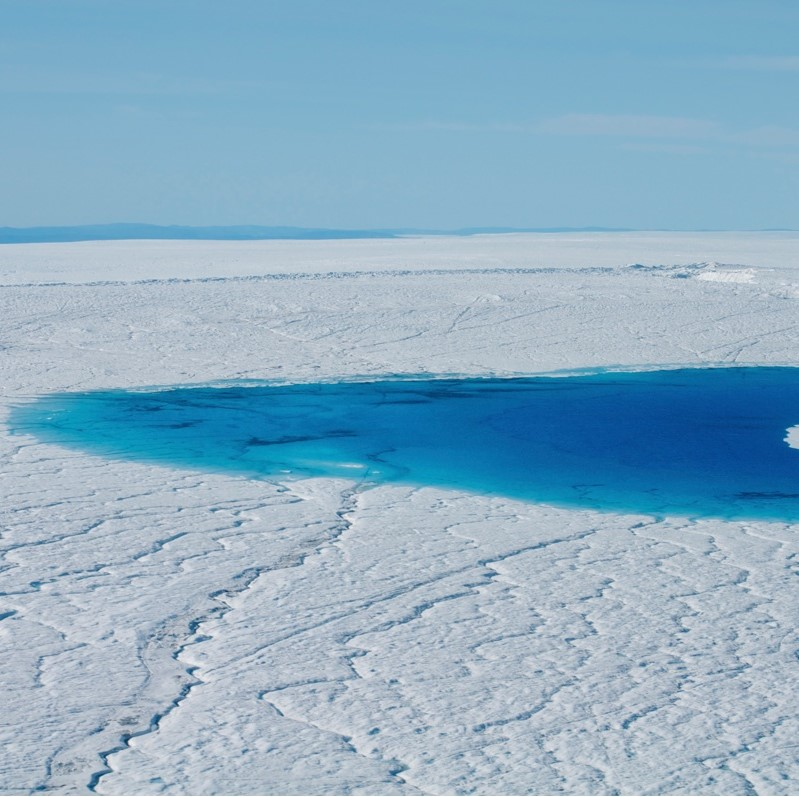

About Me
I am broadly interested in the physics of the cryosphere in a warming climate,
with a current focus on the hydrology of ice sheets and ice-ocean interactions.
Through interdisciplinary lens of porous media flows, granular mechanics, deep learning, and geoscience,
my group strives to bridge pore/grain-scale physics to observations of Earth’s surface processes.
I am currently a postdoc in the
Stanford Icy Physics Group at
Department of Geophysics at Stanford University.
[Google Scholar]
[CV]
I will be joining Purdue University as
a tenure-track assistant professor in January 2025, with an appointment from the Department of Civil and Construction Engineering.
Please send an email to olivmeng@stanford.edu if you are interested in Ph.D. and postdoc opportunities!
Research Areas
-

Ice-Sheet Hydrology
Understanding the fate of meltwater through the Greenland and Antarctic Ice Sheets and how it affects ice sheet mass losses.
-

Ice-ocean Interactions
Exploring the interactions between sea ice or calved icebergs and the ocean, and their impacts on the Earth's climate system.
-

Multiphase Flow and Granular Mechanics
Applying pore and grain-scale physics to large-scale Earth science problems in the areas of energy and the environment.
Radar Resources
These are some introductory resources for radio glaciology that I have developed for courses or student mentees.
-
Data Visualization Jupyter notebook for exploring basic airborne radar sounding data and the impact of processing techniques on data interpretability. -
Radio Glaciology Reading List Ongoing list of recent literature and reference books, categorized by scientific and radar topics. - Airborne Radar Analysis Tools Collection of MATLAB scripts for visualizing, processing, and analyzing public airborne radar data.